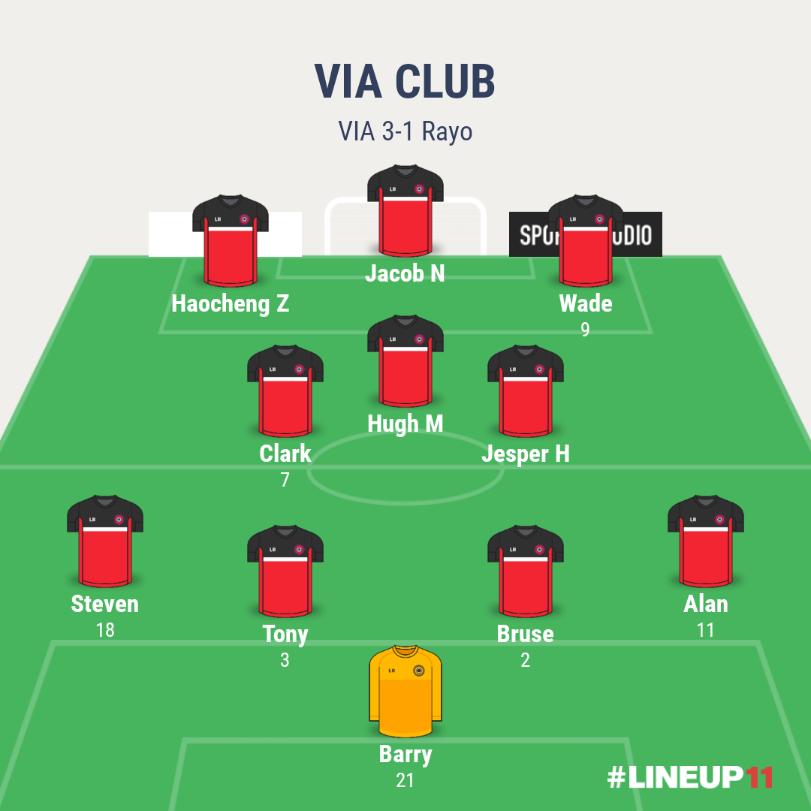

Game details


Hugh,Haocheng and Tony Stark were on the target as Superliga leaders VIA CLUB camefrom behind to beat Rayo 3-1
Rayo threatened to hand Atleti's prospects of overhauling the definding champions a boost when they opend the scoring through Tomas' fine strike.
However,Hugh levelled seven minutes in the 38th minute before Haocheng 's penalty and a late third from Tony Stark ensured VIA still have pleny at the summit